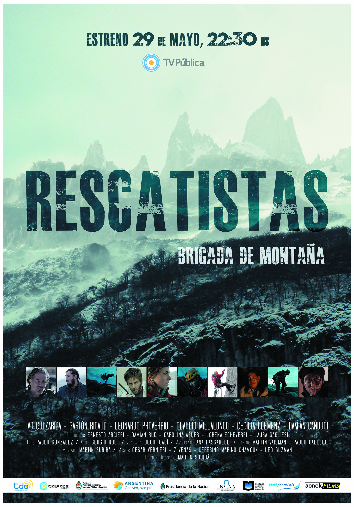
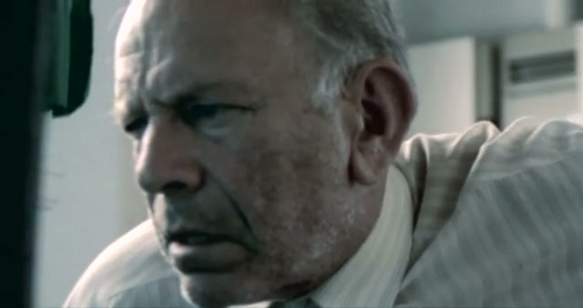
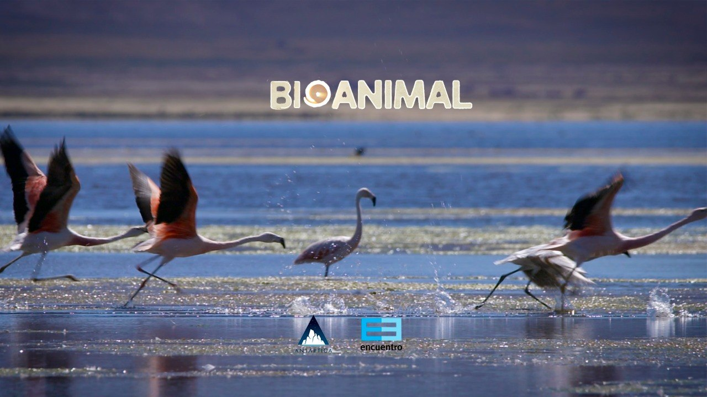
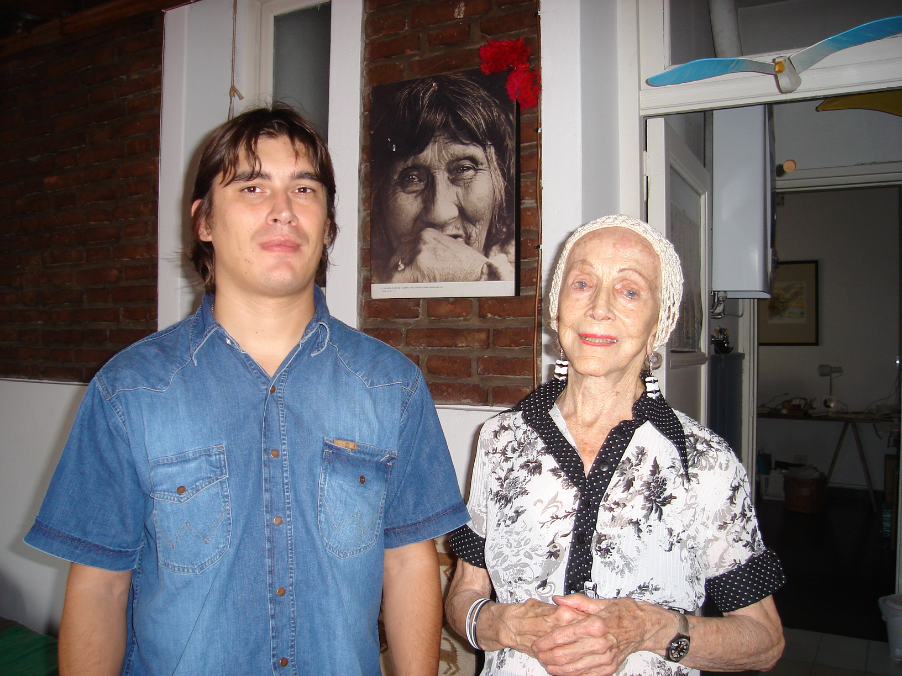
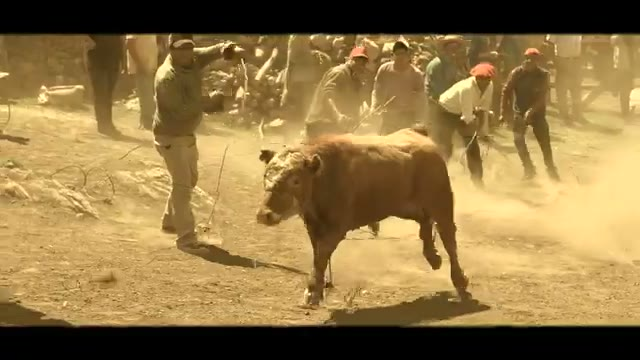
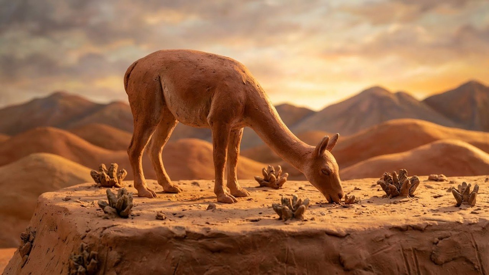
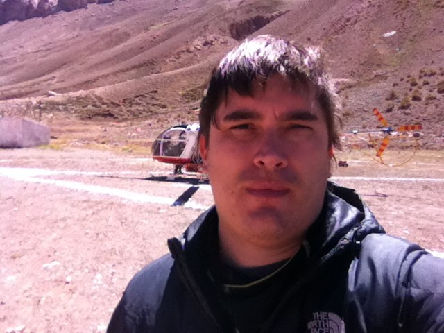
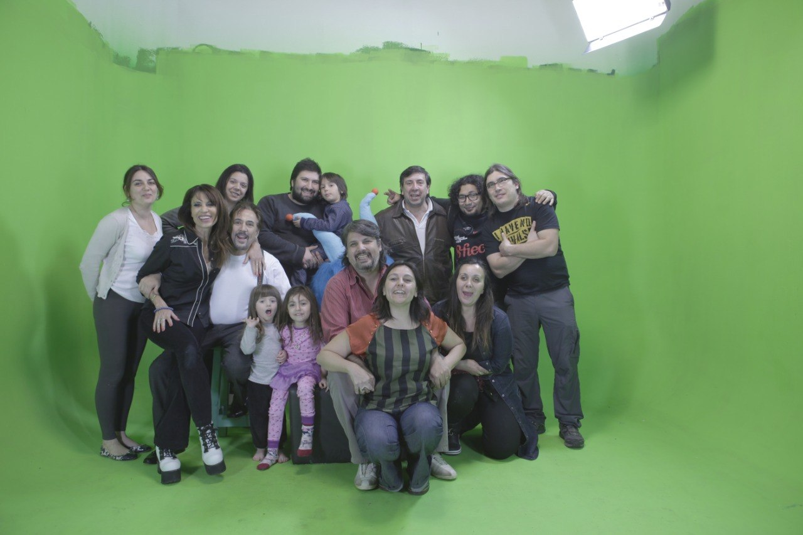

Filmografía
Proyectos & obras

Ficción TV · Aventura
Rescatistas: Brigada de montaña
Miniserie de 8 episodios filmada íntegramente en El Chaltén. La historia de una brigada de rescate voluntaria en los Hielos Continentales de la Patagonia, inspirada en hechos reales. TV Pública.

Ficción TV · Aventura
Rescatistas — Capítulo 1
Episodio 1 de 8. Miniserie filmada en El Chaltén sobre una brigada de rescate voluntaria en los Hielos Continentales de la Patagonia. TV Pública.
Ficción · Dirección de Fotografía
Sur rojo
Largo de ficción en el que Subirá firma la dirección de fotografía. Calificación 7.10 en FilmAffinity.
Documental · Editor
La dignidad de los nadies
Documental de Fernando "Pino" Solanas sobre la resistencia popular tras el colapso de 2001. Subirá integró el equipo de montaje. Hoy figura en los rankings de los mejores documentales del siglo XXI.

Cortometraje · Director
Eclipse
Cortometraje codirigido con Lautaro Santos. Ganador de Mejor Producción en argenKINO, Berlín — jurado integrado por Osvaldo Bayer y Peter Schumann. Participó en el Festival Internacional de Mar del Plata, el Festival Latinoamericano de Toulouse y el Festival del Mercosur (Brasil).
Cortometraje · Director
Santa Berlín
Rodado en Berlín con equipos técnicos alemanes tras ganar el festival argenKINO. Seleccionado en el Festival de San Rafael y exhibido en la Noche del Cortometraje del INCAA en el Cine Gaumont.
Cortometraje · Director
El legado del viento
Uno de sus primeros trabajos como director. Participó en festivales nacionales e internacionales en el circuito de cortometraje argentino.

Serie Documental · Director
Antártica: Desafío Polar
Serie de 4 capítulos sobre el continente antártico. Banda sonora compuesta por Germán Tello, interpretada por la KUG Filmmusik Orchester en Graz, Austria.

Documental · Música en vivo
Antártica — Recital KUG Orchestra
Recital en vivo con el compositor Germán Tello y la KUG Filmmusik Orchester en Graz, Austria. Banda sonora original de la serie Antártica: Desafío Polar.

Documental · Canal Encuentro
Bio Animal
Serie documental sobre los animales emblema de las eco regiones argentinas. Producción de Antártica Films para Canal Encuentro.

Serie Documental · Director
Pueblos Originarios
Serie documental sobre los pueblos originarios de la Argentina. Capítulo: Atacamas.

Serie Documental · Director
Equilibrios — Parques Nacionales
Serie sobre los Parques Nacionales de la Argentina. 4 episodios disponibles.
Videoclip · Director
Al Caído — Dogo
Videoclip del tema "Al Caído" de la banda Dogo. Río Gallegos, Santa Cruz, Argentina.

Cortometraje · Director
Señalada
Una señalada es el ritual popular de marcar los animales del campo. Este cortometraje registra ese encuentro comunitario en El Mollar, Tucumán, Argentina, donde la tradición, la fiesta y el paisaje se funden en un mismo gesto.

Animación · Stop Motion
El origen de los animales
Historia narrada en idioma tehuelche sobre el origen de los animales. Animación stop motion actualmente en proceso de producción.

Making of · En locación
En las alturas
Rodaje en exteriores de montaña.

Making of · Chroma
Rodaje con Alejandro Lerner
Producción en estudio con el cantante Alejandro Lerner.